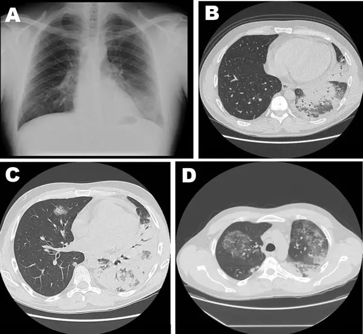

1. Définition
La pneumonieElle est une infection aiguë du parenchyme pulmonaire, c'est-à-dire des alvéoles et de l'interstitium. Elle associe un infiltrat nouveau à l'imagerie et des signes infectieux. Elle se distingue de la bronchite, où la radiographie reste normale. est une infection aiguë des alvéoles. Elle donne un infiltrat nouveau à l'imagerie. Elle est dite communautaireAcquise hors de l'hôpital, sans hospitalisation de plus de 48 heures ni soins institutionnels récents52. Les germes sont différents de ceux de la pneumonie nosocomiale (ERS 2018)5. si elle débute hors de l'hôpital. Chez le sujet âgé, elle se cache souvent derrière une plainte non spécifiqueAsthénie, malaise, chute, confusion ou perte d'appétit sans symptôme d'organe clair. Dans ce tableau, la toux et la fièvre peuvent manquer2. (CIM-11).
2. Épidémiologie (Suisse, puis Europe)
Dans une cohorte d'urgences avec plainte non spécifique, 37 patients sur 572 avaient une pneumonie comme diagnostic final (Peng 2015)1, et les deux sexes sont touchés. L'âge de plus de 65 ans expose davantage, car la pneumonie, cause évitable d'hospitalisation, pèse sur la mortalité du sujet âgé1. Le dépistage n'existe pas ; la prévention repose donc sur la vaccination (point 12), alors que la plainte non spécifique retarde le diagnostic.
| Mesure | Résultat (n/N, %) | Population, lieu, période, source |
|---|---|---|
| Pneumonie parmi les diagnostics finaux | 37/572 (6 %) | Urgences, plainte non spécifique, mai 2007 à mai 2009 (Peng 2015)1 |
| Infections dans leur ensemble | Catégorie CIM-10 la plus représentée | Revue systématique de 9 études, adultes aux urgences, surtout âgés (Kemp 2020)2 |
| Facteurs de risque de pneumonie | Âge de plus de 65 ans, BPCOBronchopneumopathie chronique obstructive : obstruction bronchique persistante, le plus souvent due au tabac2. Elle facilite les surinfections., insuffisance cardiaque, diabète, alcoolisme, immunodépression, résidence en institution (risque d'inhalation) | Sujet âgé |
3. Physiopathologie
- Amorce (moléculaire) : les récepteurs de l'immunité innée reconnaissent des motifs du germe. Les germes atteignent l'alvéole par micro-aspiration de la flore pharyngée ou par inhalation de gouttelettes.
- Développement : les macrophages alvéolairesCellules de défense résidentes de l'alvéole. Elles phagocytent les germes et libèrent des cytokines (IL-1, TNF, IL-6) qui recrutent les polynucléaires. libèrent des cytokines2. Les polynucléaires affluent.
- Installation (tissulaire puis clinique) : l'exsudat inflammatoire remplit l'alvéole. L'air ne passe plus, ce qui crée un shuntSang qui traverse des alvéoles non ventilées sans s'oxygéner. L'hypoxémie persiste malgré l'oxygène si le shunt est important. et une hypoxémie.
- Maintien : un déficit des défenses (âge, BPCO, alcool, dénutrition, immunodépression) laisse le germe se multiplier.
- Complications : le passage des cytokines dans le sang provoque un sepsis. Le foyer peut s'étendre à la plèvre.
| Lésion ou perturbation | Exploration qui la montre | Thérapeutique et mécanisme |
|---|---|---|
| Germe dans l'alvéole | Hémocultures, antigènes urinaires, PCR | Antibiotique ciblé : il tue ou bloque le germe |
| Exsudat alvéolaire | Radiographie, scanner, échographie pulmonaire | Antibiotique ; kinésithérapie pour drainer les sécrétions |
| Hypoxémie par shunt | Saturation, gazométrie | Oxygène, puis ventilation non invasive si échec |
| Cascade inflammatoire systémique | CRP, procalcitonine, lactate | Remplissage et vasopresseurs ; hydrocortisone dans le choc septique (ERS 2023)6 |
| Épanchement pleural infecté | Échographie pleurale, ponction | Drainage : il évacue le pus que l'antibiotique atteint mal |
4. Démarche diagnostique
On écarte d'abord les signes de gravité. On confirme ensuite la pneumonie par l'imagerie. On choisit enfin le lieu de soins.
4.1 Drapeaux rouges
| Drapeau rouge 🚩 | Diagnostic évoqué | Conduite immédiate |
|---|---|---|
| Fréquence respiratoire ≥ 30/min ou SpO2 < 90 %Pourquoi rouge : le patient fatigue et s'épuise6. Une hypoxémie profonde annonce une insuffisance respiratoire aiguë. | Pneumonie grave avec insuffisance respiratoire | Oxygène, gazométrie, avis de médecine intensive. |
| Pression systolique < 90 mmHg, lactate élevé, marbruresPourquoi rouge : la vasodilatation septique réduit la perfusion des organes6. La mortalité monte vite sans traitement précoce6. | Choc septique d'origine pulmonaire | Hémocultures, antibiotiques dans l'heure, remplissage. |
| Confusion nouvellePourquoi rouge : c'est un critère de gravité du CRB-6518. Elle traduit l'hypoxie, le sepsis ou une atteinte neurologique. | Pneumonie grave, méningite associée | Évaluation complète à l'hôpital. |
| Hémoptysie, perte de poids, tabagismePourquoi rouge : un cancer bronchique ou une tuberculose imitent une pneumonie qui ne guérit pas. | Cancer bronchique, tuberculose | Scanner thoracique environ 6 semaines après le début du traitement si les symptômes persistent ou si le risque de cancer est élevé18. |
| Douleur thoracique pleurale avec fièvre persistantePourquoi rouge : un épanchement pleural infecté (empyème) ne guérit pas sans drainage. | Épanchement parapneumonique, empyème | Échographie pleurale, ponction. |
4.2 Étapes jusqu'au diagnostic, sans urgence ni drapeau rouge
- Le médecin mesure les constantes : température, fréquence respiratoire, saturation, pression artérielle.
- Il ausculte le thorax et recherche un foyer.
- Il confirme le diagnostic par une radiographie du thorax ou un scanner.
- Il calcule le score CRB-65 pour choisir le lieu de soins18.
- Il prélève CRP, l'hémogramme et la créatinine, puis, si le patient est hospitalisé, les hémocultures et les antigènes urinaires.
4.3 Diagnostics différentiels discriminants
| Diagnostic | Signe ou examen qui tranche | Piège classique | Conduite si positif |
|---|---|---|---|
| Pneumonie | Infiltrat nouveau et signes infectieux | Radiographie normale au début chez le déshydraté. | Antibiotique selon la gravité. |
| Œdème pulmonaire cardiaque | BNP élevé, veines jugulaires gonflées | Râles bilatéraux pris pour une pneumonie. | Diurétique, bilan cardiaque. |
| Embolie pulmonaire | Angioscanner, D-dimères après probabilité | Fièvre modérée possible. | Anticoagulation. |
| Grippe ou COVID | PCR respiratoire | Surinfection bactérienne secondaire. | Traitement antiviral selon l'indication ; antibiotique si surinfection. |
| Tuberculose | Crachats, IGRA, scanner | Évolution lente sur des semaines. | Isolement et traitement antituberculeux. |
5. Anamnèse ciblée et drapeaux rouges
Les questions clés précisent le début, la toux et la fièvre, la présentation gériatrique et la fausse route. Elles recherchent ensuite les expositions, les antibiotiques récents, les comorbidités et les contre-indications.
6. Examen physique ciblé, région par région
Le normal précède le pathologique. Le normal comprend une fréquence respiratoire de 12 à 20/min, une saturation ≥ 94 % et un murmure vésiculaire symétrique2.
L'examen ciblé de la pneumonie suit cet ordre : état général ; inspection du thorax ; palpation et percussion. Il se poursuit par auscultation ; cœur et circulation ; puis ORL et cavité buccale. Chaque fenêtre précise le normal, la technique et le piège de chaque signe pulmonaire.
7. Approche syndromique
7.1 Syndrome de condensation pulmonaire
| Signes fonctionnels | Signes physiques, geste et mécanisme |
|---|---|
| Toux productiveLe patient expectore des sécrétions purulentes. L'exsudat alvéolaire stimule les récepteurs bronchiques. ; douleur pleuraleDouleur latérothoracique augmentée par l'inspiration profonde. La plèvre inflammatoire frotte contre la paroi. | Souffle tubaireGeste : ausculter la zone, patient en inspiration. Normal : murmure vésiculaire. Pathologique : bruit rude et tubaire. Mécanisme : un poumon condensé conduit mieux les sons. ; matité localiséeGeste : percuter doigt sur doigt. Normal : sonore. Pathologique : son mat. Mécanisme : l'air est remplacé par de l'exsudat. |
7.2 Syndrome d'hypoxémie et de sepsis
| Signes fonctionnels | Signes physiques, geste et mécanisme (%) |
|---|---|
| DyspnéeSensation d'essoufflement. L'hypoxémie stimule les chémorécepteurs. ; frissonsTremblements en début de fièvre. Les cytokines élèvent le seuil thermique. | Cyanose, désaturationGeste : oxymètre au doigt, mains chaudes. Pathologique : une saturation inférieure à 90 % compte au score de gravité de la pneumonie, et l'hypoxémie impose l'hospitalisation18. Mécanisme : le shunt empêche l'oxygénation. ; tachycardie et hypotensionGeste : pouls et tensiomètre. Mécanisme : la vasodilatation septique réduit le volume efficace. |
7.3 Syndrome pleural
| Signes fonctionnels | Signes physiques, geste et mécanisme |
|---|---|
| Douleur thoracique, dyspnée croissante. | Abolition des vibrations, matité décliveGeste : palper et percuter à la base. Normal : vibrations présentes. Mécanisme : le liquide éloigne le poumon de la paroi. |
7.4 Tableau atypique du sujet âgé
| Signes fonctionnels | Signes physiques, geste et mécanisme |
|---|---|
| Chute, asthénie, anorexieLe sepsis réduit la perfusion cérébrale et musculaire. Le sujet âgé exprime peu fièvre et toux2. | Tachypnée isoléeGeste : compter la fréquence respiratoire 1 minute2. Normal : 12 à 20/min2. Mécanisme : signe précoce de l'atteinte pulmonaire, souvent seul. |
8. Diagnostic positif et critères
Selon la définition de l'ERS reprise par les Hôpitaux universitaires de Genève en 2024, la pneumonie associe une toux aiguë, un signe focal ou une fièvre, et une image radiologique nouvelle18. Ce qui ne suffit pas : la fièvre et la toux seules, ou la CRP seule, ne posent pas le diagnostic.
| Élément clinique ou biologique évalué | Suffit à poser le diagnostic ? |
|---|---|
| Infiltrat nouveau avec signes infectieux | Oui : diagnostic positif. |
| Fièvre et toux sans imagerie | Non : on ne peut pas distinguer une bronchite. |
| CRP élevée seule | Non : elle monte dans toute inflammation. |
| Radiographie normale avec forte suspicion | Non : le scanner ou l'échographie tranche. |
Score CRB-65
| Critère (1 point chacun) | Seuil |
|---|---|
| ConfusionDésorientation nouvelle dans le temps, l'espace ou la personne. | Présente |
| Fréquence respiratoire | > 30/min18 |
| Pression artérielle | Systolique < 90 ou diastolique < 60 mmHg18 |
| Âge | > 65 ans18 |
| Score | Lieu de soins |
|---|---|
| 0 à 1 | Le patient est traité en ambulatoire18. |
| 2 | Le médecin choisit l'ambulatoire ou l'hôpital selon son jugement clinique18. |
| 3 à 4 | Le patient est hospitalisé18. |
Une pneumonie graveLes critères ATS/IDSA 2007 la définissent6. Le critère majeur est une ventilation mécanique ou un choc septique sous vasopresseurs. Il faut 3 critères mineurs sur 96. Ces critères sont : fréquence respiratoire ≥ 30, PaO2/FiO2 ≤ 250, atteinte multilobaire, confusion, urée élevée, leucopénie, thrombopénie, hypothermie, hypotension nécessitant un remplissage6. exige donc l'avis de médecine intensive.
9. Examens complémentaires
9.a Gold standard
Il n'existe pas de gold standard unique. Le diagnostic est clinique et radiologique. Le scanner thoraciqueCet examen est le plus sensible pour l'infiltrat. Il dépiste aussi l'empyème et le cancer. Pendant la grossesse, on le réserve aux cas où il change la conduite ; on évite le produit de contraste iodé en cas d'insuffisance rénale sévère ou d'allergie iodée. Sans contraste, il suffit pour le parenchyme. reste la référence d'imagerie.
Une radiographie commentée montre une condensation lobaire avec bronchogramme aérien.
9.b Première intention
On prescrit d'abord : radiographie thorax face et profil ; CRP ; puis saturation, gazométrie.
9.c Alternatives
En cas de grossesse, d'insuffisance rénale, d'allergie iodée ou de dispositif incompatible, la fenêtre examens selon le terrain indique l'alternative à la radiographie et au scanner.
9.d Deuxième intention
En deuxième intention, on demande : hémocultures, antigènes urinaires, PCR respiratoire multiplex, procalcitonine puis ponction pleurale.
10. Arbre décisionnel
- Si le patient présente un choc, une hypoxémie sévère ou une confusion nouvelle, le médecin l'oriente vers les soins intensifs, prélève des hémocultures et donne l'antibiotique dans l'heure.
- Sinon, si le patient a de la fièvre, une toux ou une chute avec des crépitants, le médecin prescrit une radiographie du thorax.
- Si la radiographie montre un infiltrat nouveau, le médecin calcule le CRB-656.
- Si CRB-65 égal à 0 et contexte stable, le traitement ambulatoire repose sur amoxicilline6.
- Si le CRB-65 est de 1 à 2, le médecin discute l'hospitalisation selon les comorbidités et le contexte6. S'il est de 3 à 4, il hospitalise le patient et prescrit des hémocultures, des antigènes urinaires et une bêta-lactamine i.v.6.
- Si la radiographie est normale malgré une suspicion forte, le médecin prescrit une échographie ou un scanner.
- Si la fièvre persiste après 72 heures, le médecin cherche un empyème, une résistance ou un autre diagnostic6.
11. Prise en charge selon les recommandations suisses
Les doses viennent de l'AIPS suisse.
11.A But thérapeutique
Le but est de guérir l'infection, de normaliser l'oxygénation et d'éviter la mort et la récidive. Le patient ambulatoire est revu dans les 48 heures ; sans amélioration, le médecin réévalue le diagnostic et discute l'hospitalisation18. Le retour à l'état de base dure plusieurs semaines chez le sujet âgé.
11.B Moyens
- Le médecin pose une voie veineuse, donne de l'oxygène et surveille la saturation.
- Il prélève deux paires d'hémocultures et le lactate.
- Donner en moins d'une heure Rocephin®Sa DCI est ceftriaxone. Dans la leçon DX.3 (pneumonie), sa classe est céphalosporine de 3e génération (ATC J01DD04). Son groupe est celui des céphalosporines. Les chefs de file sont céfuroxime, ceftriaxone, céfépime. Ses indications sont : infections respiratoires, dont la pneumonie, sepsis. Chez l'adulte, la posologie AIPS est de 1 à 2 g une fois par jour10. Elle monte jusqu'à 4 g par jour si l'infection est sévère ou le germe peu sensible10..
- Il ajoute un macrolide si la légionelle est suspectée ou si la pneumonie est grave (ERS 2023)6.
- Il remplit le patient avec des cristalloïdes, puis ajoute des vasopresseurs si l'hypotension persiste.
- Il demande l'avis des soins intensifs, qui choisissent la ventilation non invasive ou invasive selon l'échec respiratoire.
- Il envisage l'hydrocortisone en cas de pneumonie grave ou de choc septique (ERS 2023)6.
Hors urgence, le médecin suit cet ordre.
- Mesures générales. Le médecin hydrate le patient, traite la douleur et la fièvre et le lève précocement. Le patient reçoit Dafalgan®Sa DCI est paracétamol. Sa classe est antalgique et antipyrétique (ATC N02BE01). Son groupe est celui des analgésiques non opioïdes, anilides. Les chefs de file sont paracétamol. Ses indications sont : douleur, fièvre. Chez l'adulte et au-delà de 12 ans, la posologie AIPS est de 500 à 1000 mg par prise11. Le maximum est de 4000 mg par jour11..
- Pharmacologique ambulatoire (CRB-65 à 0)6. Amoxicillin SandozSa DCI est amoxicilline. Sa classe est aminopénicilline (ATC J01CA04). Son groupe est celui des pénicillines à spectre élargi. Les chefs de file sont ampicilline, amoxicilline. Ses indications sont : infections respiratoires, dont la pneumonie. Chez l'adulte et l'enfant de plus de 40 kg, la posologie AIPS est de 1500 à 3000 mg par jour en 3 à 4 prises dans les infections légères à moyennes12. Le maximum est de 4000 à 6000 mg par jour12. Le traitement se poursuit 48 à 72 heures après l'effet clinique12.. En cas de comorbidité, Augmentin®Sa DCI est amoxicilline et acide clavulanique. Sa classe est pénicilline avec inhibiteur de bêta-lactamase (ATC J01CR02). Son groupe est celui des associations de pénicillines. Les chefs de file sont amoxicilline-clavulanate, pipéracilline-tazobactam. Ses indications sont : pneumonie ambulatoire, sinusite, pyélonéphrite. Chez l'adulte et l'enfant de plus de 40 kg, la posologie AIPS dans la pneumonie ambulatoire est de 2 x 1 g (875/125) ou 3 x 625 mg (500/125) par jour13. Le maximum est de 3 x 1 g par jour13. Si la ClCr est de 10 à 30 mL/min, la dose est de 625 mg toutes les 12 heures13..
- Allergie à la pénicillineSa DCI est pénicillines (classe). Sa classe est bêta-lactamines (ATC J01C). Son groupe est celui des pénicillines. Les chefs de file sont pénicilline G, amoxicilline, flucloxacilline. Ses indications sont : infections bactériennes sensibles. La posologie AIPS figure plus haut avec l'amoxicilline et Augmentin®. L'allergie vraie contre-indique la classe. Une allergie anamnestique douteuse se précise avant d'exclure la classe. ou germe atypique. Klacid®Sa DCI est clarithromycine. Sa classe est macrolide (ATC J01FA09). Son groupe est celui des macrolides. Les chefs de file sont érythromycine, clarithromycine, azithromycine. Ses indications sont : infections respiratoires, dont les pneumonies atypiques. Chez l'adulte, la posologie AIPS est de 250 mg toutes les 12 heures14. Elle atteint 500 mg toutes les 12 heures si l'infection est grave14. Si la ClCr est inférieure à 30 mL/min, la dose est réduite de moitié et le traitement ne dépasse pas 14 jours14. Par voie i.v., la dose est de 500 mg deux fois par jour pendant 5 jours au plus15. ou Doxycyclin-Mepha®Sa DCI est doxycycline. Sa classe est tétracycline (ATC J01AA02). Son groupe est celui des tétracyclines. Les chefs de file sont tétracycline, doxycycline, minocycline. Ses indications sont : infections respiratoires, infections à germes atypiques. Chez l'adulte, la posologie AIPS est de 200 mg le premier jour, puis de 100 mg par jour en une prise16. Elle monte à 200 mg par jour si l'infection est grave16..
- Pneumonie hospitalisée. Le traitement comprend une bêta-lactamine i.v. (Rocephin® ci-dessus), plus un macrolide si la pneumonie est grave. Le relais oral intervient dès l'amélioration. Tavanic®Sa DCI est lévofloxacine. Sa classe est fluoroquinolone (ATC J01MA12). Son groupe est celui des fluoroquinolones. Les chefs de file sont ciprofloxacine, lévofloxacine, moxifloxacine. Ses indications sont : pneumonie communautaire, pyélonéphrite. Chez l'adulte, la posologie AIPS dans la pneumonie communautaire est de 500 mg 1 à 2 fois par 24 heures, par voie orale ou i.v., pendant 7 à 14 jours17. Il est contre-indiqué avant 18 ans, pendant la grossesse et l'allaitement, en cas d'épilepsie ou de tendinopathie après fluoroquinolone17. en deuxième choix.
- Durée. Le médecin peut arrêter le traitement après une réponse clinique stable. La procalcitonine peut aider à décider (étude ProHOSP). Cinq jours suffisent habituellement en ambulatoire18. La durée ne dépasse généralement pas 8 jours chez le patient qui répond19.
- Non pharmacologique. Le médecin prescrit l'hydratation, l'oxygénothérapie, la kinésithérapie respiratoire, la mobilisation et la nutrition, et conseille l'arrêt du tabac.
Synthèse des médicaments
Ce tableau est la synthèse des molécules du point 11.B. Il indique la dose adulte de l'AIPS, la durée et la précaution majeure, car le prescripteur compare ainsi les options en une lecture. Il y repère aussi les contre-indications et les interactions avant de choisir la molécule. Lorsque la durée n'est pas propre à la molécule, elle suit la durée globale du traitement, car la réponse clinique stable décide de l'arrêt.
| Spécialité ® | Dose adulte AIPS | Durée | Contre-indication ou précaution majeure | n° Swissmedic |
|---|---|---|---|---|
| Rocephin® (ceftriaxone) | 1 à 2 g une fois par jour, jusqu'à 4 g si infection sévère10 | Selon la durée globale du traitement, 8 jours au plus chez le patient qui répond19 | Contre-indiqué en cas d'hypersensibilité aux céphalosporines ; ne pas dépasser 4 g par jour10 | 44625 |
| Amoxicillin Sandoz® (amoxicilline) | 1500 à 3000 mg par jour en 3 à 4 prises, maximum 4000 à 6000 mg par jour12 | 48 à 72 heures après l'effet clinique12 | Contre-indiqué en cas d'hypersensibilité aux pénicillines ou aux céphalosporines, de mononucléose infectieuse ou de leucémie lymphoïde12 | 56203 |
| Augmentin® (amoxicilline et acide clavulanique) | 2 x 1 g (875/125) ou 3 x 625 mg (500/125) par jour, maximum 3 x 1 g par jour13 | Selon la durée globale du traitement | ClCr de 10 à 30 mL/min : 625 mg toutes les 12 heures13 | 45674 |
| Klacid® (clarithromycine) | 250 mg toutes les 12 heures, jusqu'à 500 mg si infection grave ; voie i.v. : 500 mg deux fois par jour1415 | Si ClCr inférieure à 30 mL/min : moitié de la dose et 14 jours au plus ; voie i.v. : 5 jours au plus1415 | Contre-indiqué si antécédent d'allongement du QT, hypokaliémie ou hypomagnésémie ; simvastatine, lovastatine, colchicine, ergotamine et ticagrélor contre-indiqués14 | 50469 et 51759 |
| Doxycyclin-Mepha® (doxycycline) | 200 mg le premier jour, puis 100 mg par jour ; 200 mg par jour si infection grave16 | Selon la durée globale du traitement | Pas de grossesse sauf nécessité absolue ; pas d'allaitement ; insuffisance hépatique sévère ; dents teintées chez l'enfant16 | 65952 |
| Tavanic® (lévofloxacine) | 500 mg 1 à 2 fois par 24 heures, par voie orale ou i.v.17 | 7 à 14 jours17 | Contre-indiqué avant 18 ans, pendant la grossesse et l'allaitement, en cas d'épilepsie ou de tendinopathie après fluoroquinolone ; allongement du QT17 | 54365 |
| Dafalgan® (paracétamol) | 500 à 1000 mg par prise ; maximum 4000 mg par jour11 | Tant que la douleur ou la fièvre persistent | Ne pas dépasser 4000 mg par jour11 | 47503 |
Situations spéciales
| Situation | Conduite |
|---|---|
| Grossesse et allaitement | Rocephin® ne se donne pendant la grossesse que s'il est formellement indiqué10. L'amoxicilline exige la prudence pendant la grossesse et ne se donne pas pendant l'allaitement12. Augmentin® ne se donne qu'en cas de nécessité absolue, sans allaiter13. La doxycycline ne se donne pas sauf nécessité absolue16. Tavanic® est contre-indiqué pendant la grossesse et l'allaitement17. Klacid® ne se donne que par nécessité absolue, sans allaiter pendant le traitement et un jour après14. |
| Insuffisance rénale | Adapter Augmentin® (625 mg toutes les 12 h si ClCr 10 à 30 mL/min) et Klacid® (moitié de dose si ClCr < 30 mL/min)13,14. |
| Sujet âgé | Hospitaliser plus facilement ; vérifier la déglutition et le risque de chute. |
| Enfant | Dose selon le poids ; Augmentin® comprimés n'est pas adapté aux moins de 40 kg ; la doxycycline teinte les dents en formation, donc l'AIPS donne une posologie pédiatrique à partir de 12 ans, soit 4 mg/kg le premier jour puis 2 mg/kg par jour jusqu'à 50 kg16 ; Tavanic® est contre-indiqué avant 18 ans17. |
| Insuffisance hépatique | Prudence avec macrolides et amoxicilline-clavulanate : lire l'information professionnelle. |
Le médecin informe le patient des effets indésirables, afin que celui-ci les reconnaisse : diarrhée sous Augmentin® et macrolides, photosensibilité sous doxycycline, tendinopathie sous Tavanic®. Les interactions majeures sont les suivantes. Klacid® inhibe le CYP3A4 et contre-indique la simvastatine ou la lovastatineLe CYP3A4 les métabolise, et l'association est contre-indiquée selon l'AIPS de Klacid®14.. L'AIPS contre-indique aussi la colchicine, l'ergotamine et le ticagrélor avec Klacid®14. Les deux antibiotiques Klacid® et Tavanic® allongent le QT14,17.
Social et professionnel
L'arrêt de travail dépend de l'état clinique. L'assurance maladie (LAMal) couvre les soins ; la LAA s'applique en cas d'accident ou de maladie professionnelle. La conduite est interdite en cas de fatigue importante ou de confusion.
11.C Surveillance
| Quoi | Quand | Seuil d'alerte |
|---|---|---|
| Température, saturation, fréquence respiratoire | Chaque jour ; plusieurs fois par jour en cas de gravité | Fièvre persistante au-delà de 72 h ; SpO2 < 90 %6 |
| CRP | Jour 3 à 4 | Absence de baisse |
| Créatinine, bilan hépatique | Selon la molécule | Insuffisance rénale : adapter la dose |
| Radiographie de contrôle | Scanner vers 6 semaines si les symptômes persistent ou si le risque de cancer est élevé (fumeur, âge > 50 ans) ; aucune imagerie si l'évolution est favorable18 | Infiltrat persistant : suspecter une tumeur |
11.D Pronostic et sortie
Le patient sort lorsque sa température, ses paramètres respiratoires et hémodynamiques sont stabilisés19. La CRP se mesure au jour 1 puis au jour 3 ou 419. Il doit boire, manger et prendre le traitement oral. La récupération dure des semaines. La mortalité dépend de la gravité et de l'âge.
12. Prévention
| Niveau | Gestes |
|---|---|
| Primaire | Vaccination antipneumococcique et antigrippale des personnes âgées et des personnes à risque, selon le plan de vaccination suisse de l'OFSP et de la CFV. Arrêt du tabac. Hygiène bucco-dentaire. Dépistage de la dysphagie. |
| Secondaire | Diagnostic précoce chez le sujet âgé devant toute plainte non spécifique2 ; antibiotique rapide en cas de sepsis. |
| Tertiaire | Réadaptation, mobilisation, rattrapage vaccinal, contrôle radiologique à 6 semaines si risque de tumeur2. |
Le risque épidémiologique du point 2 (âge, BPCO, alcool, institutions) définit les populations cibles.
13. Points clés
- Le médecin pense à la pneumonie devant une chute, une confusion ou une asthénie chez le sujet âgé, car la plainte reste souvent non spécifique2.
- Le diagnostic associe un infiltrat nouveau à des signes infectieux.
- Le CRB-65 décide du lieu de soins : un score de 0 permet le domicile, et un score de 3 ou 4 impose l'hôpital en urgence6.
- Le médecin prélève les hémocultures avant l'antibiotique et traite le choc septique dans l'heure.
- Le patient sans comorbidité reçoit de l'amoxicilline ; le macrolide s'ajoute en cas de gravité ou de légionellose.
- La fièvre persistante après 72 heures impose de chercher un empyème ou un autre diagnostic2.
14. Pièges et questions fréquentes à l'examen fédéral suisse
Chaque ligne pose la question, puis donne la réponse exacte. La réponse courte vient d'abord, la raison ensuite.
| Question d'examen | Bonne réponse |
|---|---|
| 1. Un patient âgé confus sans toux peut-il avoir une pneumonie ? | Oui. La plainte non spécifique cache souvent une infection2. |
| 2. La radiographie est normale : exclut-elle la pneumonie ? | Non. Elle peut être normale au début ; échographie ou scanner si suspicion forte. |
| 3. Quels critères composent le CRB-65 6? | Confusion, fréquence respiratoire ≥ 30, pression basse, âge ≥ 65 ans6. |
| 4. Quel antigène urinaire détecte la légionelle ? | Le sérogroupe 1 seulement ; un test négatif n'exclut pas la maladie6. |
| 5. Quelle dose d'amoxicilline selon l'AIPS dans l'infection légère à moyenne ? | 1500 à 3000 mg par jour en 3 à 4 prises12. |
| 6. Quelle dose de Rocephin® chez l'adulte ? | 1 à 2 g une fois par jour, jusqu'à 4 g si infection sévère10. |
| 7. Quelle est la posologie de Tavanic® dans la pneumonie communautaire ? | 500 mg 1 à 2 fois par 24 heures, 7 à 14 jours17. |
| 8. Quand donner l'antibiotique en cas de choc septique ? | Dans l'heure, après les hémocultures. |
| 9. Que faire devant une fièvre persistante après 72 heures 6? | Chercher un empyème, une résistance ou un autre diagnostic. |
| 10. Le dosage unique de la procalcitonine suffit-il à décider ? | Non. Elle sert surtout à arrêter l'antibiotique. |
Les raisons de ces réponses expliquent les confusions fréquentes.
- Le sérogroupe 1 explique la limite de l'antigène urinaire, car le test ne détecte pas les autres sérogroupes de Legionella6.
- La fièvre persistante au-delà de 72 heures oriente vers un empyème ou une résistance, donc le médecin élargit la recherche au lieu de poursuivre le même traitement6.
- La dose d'amoxicilline dépend de la gravité, car l'AIPS distingue l'infection légère à moyenne, avec un maximum de 4000 à 6000 mg par jour12.
- La dose de Rocephin® monte à 4 g par jour lorsque l'infection est sévère ou le germe peu sensible10.
- La dose de Dafalgan® reste limitée à 4000 mg par jour, car l'AIPS fixe ce maximum11.
- Tavanic® reste un deuxième choix, car il allonge le QT et il est contre-indiqué avant 18 ans, pendant la grossesse et l'allaitement17.
- Le CRB-65 décide du lieu de soins, car un score de 0 autorise le domicile si le contexte est stable, tandis qu'un score de 3 à 4 impose l'hospitalisation urgente6.
- Une radiographie normale n'exclut pas une pneumonie débutante, donc le médecin demande une échographie ou un scanner lorsque la suspicion reste forte.
Questions clés
| Question clé | Raison physiopathologique |
|---|---|
| Début, toux, expectoration, fièvre ?Une installation en quelques jours avec expectoration purulente évoque le pneumocoque. Une toux sèche avec céphalées et début lent évoque un germe atypique. | Le tableau oriente vers le germe et vers l'antibiotique. |
| Chute, confusion, perte d'appétit ?Chez le sujet âgé, ces signes remplacent la toux et la fièvre. Ils sont fréquents dans la plainte non spécifique2. | La réponse inflammatoire est atténuée avec l'âge. |
| Fausse route, troubles de la déglutition ?L'inhalation dépose la flore buccale dans le poumon déclive. Elle impose un antibiotique actif sur les anaérobies de la bouche. | Le mécanisme d'entrée change le spectre antibiotique. |
| Voyage, climatisation, piscine, hôtel ?Ces expositions évoquent la légionellose. Elle exige un macrolide ou une fluoroquinolone et une déclaration à l'OFSP. | Légionella vit dans l'eau tiède aérosolisée. |
| Antibiotiques récents, hospitalisation récente ?Ils sélectionnent des germes résistants et orientent vers une couverture plus large. | La flore a changé sous pression antibiotique. |
| BPCO, diabète, alcool, VIH, immunosuppresseurs, vaccinations ? | Chaque terrain affaiblit une défense précise du poumon. |
| Allergie à la pénicilline, grossesse, fonction rénale ? | Ils orientent le choix de la molécule et sa dose. |
Radiographie commentée
Condensation lobaire avec bronchogramme aérien. Cette radiographie thoracique de face et ces scanners axiaux montrent une pneumonie grave à Legionella pneumophila chez un homme adulte.

Lisez d'abord seul ce cliché (condensation lobaire avec bronchogramme aérien) : cherchez vous-même le signe.
La copie annotée (condensation lobaire avec bronchogramme aérien) montre les repères décrits ci-dessous.
- Une opacité de la zone inférieure gauche apparaît sur la radiographie, mais elle reste peu spécifique à elle seule.
- Le scanner montre une condensation homogène du lobe inférieur gauche, car l'alvéole remplie de liquide devient dense.
- Les bronches restées aérées se détachent en noir dans la condensation, ce qui définit le bronchogramme aérien.
- Une radiographie normale ne permet pas d'exclure une pneumonie débutante.
- La radiographie seule reste peu spécifique, donc le scanner précise l'extension.
Ce que l'image décide. Un infiltrat nouveau avec des signes infectieux confirme la pneumonie ; le clinicien évalue alors la gravité, puis traite selon le point 11.

Général
| Normal attendu | Température < 38 °C, patient éveillé2. |
| Fièvre, tachypnée, désaturation, confusion | Technique : compter la fréquence respiratoire pendant 60 secondes sans prévenir le patient ; mesurer la saturation au doigt. Valeur : une fréquence supérieure à 30/min est un critère du CRB-6518. Piège : le sujet âgé peut être apyrétique. |
Thorax : inspection
| Normal attendu | Les deux hémithorax se soulèvent ensemble. |
| Tirage, battement des ailes du nez | Technique : regarder le patient déshabillé, assis ou semi-assis. Valeur : ils signent un effort respiratoire important. Piège : absents chez le patient épuisé. |
Thorax : palpation et percussion
| Normal attendu | Vibrations vocales égales ; son clair. |
| Vibrations vocales augmentées, matité | Technique : poser la paume sur le dos, faire dire « trente-trois », comparer à gauche et à droite ; percuter de haut en bas. Valeur : vibrations augmentées dans la condensation ; matité franche avec abolition dans l'épanchement. Piège : les signes et symptômes de la pneumonie sont peu spécifiques, et un examen normal ne l'exclut pas18. |
Thorax : auscultation
| Normal attendu | Murmure vésiculaire doux, sans bruit ajouté. |
| Crépitants, souffle tubaire | Technique : placer le stéthoscope sur la peau, comparer les deux côtés, à l'inspiration profonde. Valeur : crépitants fins localisés et souffle tubaire évoquent la condensation. Piège : des crépitants bilatéraux orientent plutôt vers l'œdème pulmonaire. |
Cœur et circulation
| Normal attendu | Pouls et pression stables ; une systolique inférieure à 90 mmHg ou une diastolique inférieure à 60 mmHg compte au CRB-6518. |
| Tachycardie, hypotension, marbrures | Technique : prendre le pouls, la pression, le temps de recoloration cutanée (normal < 3 s). Valeur : ils signent le sepsis. Piège : un bêta-bloquant masque la tachycardie. |
ORL et cavité buccale
| Normal attendu | Muqueuses humides, dents en bon état. |
| Mauvaise hygiène dentaire, dysphagie | Technique : inspecter la bouche et observer une gorgée d'eau. Valeur : elles évoquent l'aspiration. Piège : la fausse route silencieuse se voit à peine. |
Radiographie thorax face et profil
| Radiographie thorax face et profil | Prescrire chez tout patient suspect, debout si possible. Dose d'irradiation faible ; protéger si grossesse. |
| Résultat | Infiltrat alvéolaire |
| Signification | Pneumonie confirmée |
| Conduite | Antibiotique |
| Résultat | Normale |
| Signification | Pneumonie débutante possible |
| Conduite | Échographie ou scanner si suspicion forte |
Examens selon le terrain
| Situation | Alternative | Remarque |
|---|---|---|
| Grossesse | Échographie pulmonaireTechnique : sonde sur les espaces intercostaux. Une condensation sous-pleurale avec bronchogramme aérien évoque la pneumonie. Sans irradiation, donc utile en grossesse et chez l'enfant. Dépend de l'opérateur. | Limiter la radiographie. |
| Insuffisance rénale (DFGe < 30 mL/min)6 | Scanner sans contraste | Le contraste est inutile pour le parenchyme. |
| Allergie aux produits iodés | Scanner sans contraste, échographie | — |
| Dispositif non compatible IRM | L'IRM n'est pas indiquée ici | Le scanner suffit. |
Hémocultures
| Hémocultures | Deux paires avant l'antibiotique, chez tout patient hospitalisé. Un germe isolé change le traitement ; rendement faible en ambulatoire. |
| Indication, résultat | Pneumonie modérée à grave. Positives : pneumocoque ou autre. |
| Conduite | Adapter à l'antibiogramme |
Procalcitonine
| Procalcitonine | Marqueur bactérien. Utile pour décider d'arrêter l'antibiotique (étude ProHOSP, Bâle). Sa valeur initiale seule ne suffit pas à retenir ou exclure la cause bactérienne. |
| Indication, résultat | Hospitalisation |
| Conduite | Arrêt précoce possible si valeur basse |